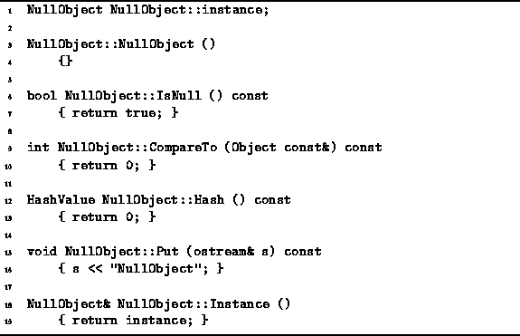

Data Structures and Algorithms
with Object-Oriented Design Patterns in C++
Data Structures and Algorithms
with Object-Oriented Design Patterns in C++
Program  shows how the member functions
of the NullObject class are defined.
The most important characteristic of the NullObject class
is that its IsNull member function returns the value true.
shows how the member functions
of the NullObject class are defined.
The most important characteristic of the NullObject class
is that its IsNull member function returns the value true.

Program: NullObject Class Member Function Definitions
The remaining functions are trivial: The constructor does nothing; the two member functions Hash and CompareTo both return zero; and the Put function simply prints ``NullObject''. Finally, the Instance static member function returns a reference to the static member variable instance which is the one and only instance of the NullObject class.
 Copyright © 1997 by Bruno R. Preiss, P.Eng. All rights reserved.
Copyright © 1997 by Bruno R. Preiss, P.Eng. All rights reserved.